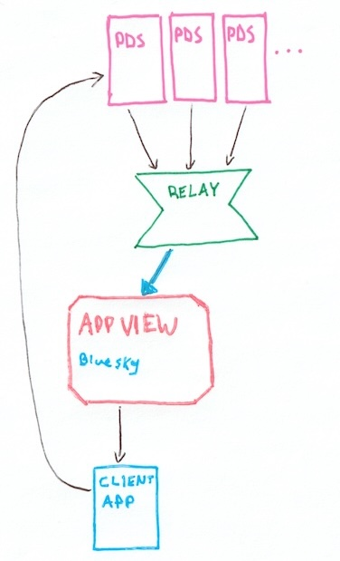

atproto and bluesky
Can atproto scale down?
2025-02-14 by phil (they/them)
status: draft in progress, please don't share yet
It's frequently stated[by who?] that some core components of the AT-Protocol architecture are expensive to host and don't scale down. So expensive that they are out of reach reach except for VC-funded commercial companies like Bluesky PBC, and expensive due to the structure of the protocol itself. Very non-decentralized.
We're going to skip past your Personal Data Server (PDS; cheap), going to put aside the Relay costs for now, and consider Bluesky's expensive AppView component.
And skipping right to the end, my answer to "can it scale down" is just: "yes!". Here's my Raspberry Pi 4b, at home, consuming a few watts and pulling around 20GB of simplified firehose events per day. It's an AppView indexing all cross-repo references (backlinks) in the AT-mosphere, often up to 1,500 created per second. It's closing in on one billion backlinks, eating up an old SATA SSD connected over a salvaged USB adapter.


Backlinks can hydrate information about social interactions. Skyblur.uk is using the index on this very pi to show Bluesky interaction counts. The index can also list all quote-posts, replies, account followers and blockers; Frontpage story comments, upvotes, and so on.
Obviously this is doing less than Bluesky PBC's AppView so maybe you're not convinced, but zoom out with me: a Hard Thing that BlueSky's AppView implementation must do is serve over 31 million users (read load) with best-in-class feedgen. Our self-host dream doesn't involve that.
Our self-host dream does involve handling the same 31M user write load as Bluesky's, but I think this is where the it's expensive critique gets wires crossed: Bluesky's read load is what's actually expensive. I have a billion links on a happy raspberry pi.
~
iffffff you want to know I think we can go from a backlinks index to a self-hosted mostly-complete Bluesky-compatible AppView experience, I'll get into it below. My project to do it is microcosm.
Scaling down a Bluesky AppView
Dan Abramov's talk Web Without Walls is worth a watch if you're new to AT-Protocol.
Data flow
AT-Protocol has this nice circular (unidirectional!) data flow. Everyone gets their own little personal data repository for their content that's hosted by a PDS, changes are aggregated by a Relay, broadcast to AppViews, which present that content back to you.
Since the AppView gets the full feed of all data from everyone posting in the world, it can be built as a mostly typical http app backend but with an unusual write path.
Bluesky's relay is open, so you can build your own AppView and receive all the global content just by connecting with a websocket. You can put your own data types (called Lexicons) into your users' PDS, and they will come out of the relay just like all of Bluesky's own user data.
Bluesky's unfiltered relay broadcast is called the firehose, and jetstream is an awesome firehose adaper that re-emits the content as simplified JSON.
Firehose, event log, shared heap
"Shared heap" is a description of the relay/firehose data flow, coined by Christine Lemmer-Webber in her fantastic critique of AT-Protocol. It contrasts with the "message-passing" architectures of protocols like ActivityPub. I'm mentioning it here because that framing forms a central part of an argument that AppViews are necessarily expensive, which is part of what motivated this post. And maybe this should be in footnotes since it's kind of aside to the other stuff around it here.
Event log (todo, or maybe just skip that term)
Bluesky's AppView

…I mean I don't work there so I don't know the exact breakdown of services. They do have a giant expensive database (ScyllaDB) with a copy of all Bluesky content, but like most modern backends, features will be decomposed into smaller individual services.
The point is that when someone says "The Bluesky AppView", or even "AppView" as an AT-Protocol component, I think it obscures the fact that there's a lot going on there. Breaking it down into feature-oriented pieces might lead us to discover self-hostable alternative ways to implement them.
No-AppView apps
One more detour, about that big giant database in the Bluesky appview. All the data in there is also avaialable its owners' PDS, and you can fetch it directly any time you want (if you don't have to reply ultra-fast to 31M users).
You can do this right now, in your browser, with some awesome tooling folks are building:
And if you click around a bit, you might get the feeling that this is almost enough to be able to doomscroll Bluesky. Like really: a fully rendered Bluesky post. You could already rebuild your following feed without any AppView:
- fetch the list of accounts you follow from your own PDS
- fetch the latest posts from each of their PDS
- render them

Social interactions are still missing and it won't be fast. But I have a billion links on a raspberry pi so we can already solve the first part, remember ➡️
We're getting closer to Bluesky.
Here, have some backlinks in your PDS browser:
(Atproto link aggregator is now called Constellation. I drew these diagrams quite a while ago)
Feed generation
You could take different approaches to speed up the slow following feed generation above. Another micro-appview could listen to the firehose and pre-cache posts from accounts you follow. That pre-cache could expand to friend-of-a-friend, and you might get a decent hit rate on reposts.
You could adopt the feed generation APIs that the Bluesky app uses and plug in existing custom feeds. If you pro-actively render these as content comes in (push style), it might even feel like pretty good UX. For a small number of users it's not resource-demanding.
Composable micro-AppViews
So we have a backlink index for hydrating social interactions: exists and works today. A hand-wavey feedgen descripition that hopefully sounds plausible. Notifications are an important part of social media. And they're actually pretty easy!
All Bluesky notifications (except DMs) are just backlinks-as-they-happen. We already have code that extracts backlinks from the firehose in real time: adapt it to trigger webhooks or send a websocket message whenever a new backlink refers to your account or content!
Pieces are coming together:
![diagram with a large central box that says 'pi-sized appview' with smaller boxes inside: atproto link aggregator, atproto link notifier, atproto record cache, and lazy cdn are all internally pointed at by 'MySky' for 'hydrate likes', 'notifications', 'feed', and 'media' respectively. from the outside above there is a thick blue arrow labeled 'firehose' that points at 'jetstream' which in turn points to several of the internal boxes. the link notifier, record cache, and lazy cdn point with ligher arrows to three PDS boxes above. finally, a stack of client app boxes below are pointed at by 'MySky'.](backyard.jpg)
All of these components can run with minimal resources. I really think that self-hosting a Bluesky-compatible appview with most of the full Bluesky experience is within reach.
Beyond Bluesky
Like the backlink index, these micro-AppView services don't have to be specific to Bluesky content. Backlinks tend look the same across all lexicons so far, so notifications can just work. PDSs store media as blobs in a generic way, so atproto CDNs can benefit all types.
I don't think the usefulness of these services is limited to cloning other AppViews either. If you build a new photo-sharing app on atproto, you could lean on the microcosm notification service (soon, it's a work in progress), subscribing to interactions sourced from your lexicon for users instead of implementing it yourself. Even if just in the prototyping phase.
The big picture
I'd like to think of this as a bottom-up approach to scaling down. It's at least partly a response to some of "is bluesky decentralized really", but does it get us there? If we scale to millions of copies of micro-AppViews, it will burden the relays. If we approach content hydration with caches that have to often re-fetch from PDS, it could overload them. If you self-host a viral skeet will you get a surprise bandwidth bill? Operating and orchestrating all the little services is probably not within reach for many people even if it is cheap. Is this really a meaningful contribution to decentralization?
Well thanks, me, for asking. I don't about meaningful but I have two sources of optimism:
Many of the micro-AppView components can be shared, just like Bluesky's relay. Like the relay, the backlink index requires a global view, and it's somewhat neutral and substitutable. The notification service isn't specific to Bluesky's lexicon. Maybe the number of instances will grow at something like a log-N of users they serve.
Top-down approaches to decentralizing might also work out! Maybe another org with some cash or funding will start running a full-scale Bluesky-compatible alternative AppView with Big Giant Databases ready to serve millions of users worth of read load.
I think a healthy future for AT-Protocol looks like both kinds, top-down and bottom-up decentralization* happening.
~
*feel free to quibble with my use of the word "decentralization" here and in this whole post. I do too.
Other notes
-
@alnkq.bsky.social already did pretty much all of this! A Bluesky-compatible, many-featured, low-resource AppView that listens to the firehose, maintains reverse-indices, and falls back on fetching content from PDSs. Their source is on github.
-
I linked it in the post and I'll link it again: Christine Lemmer-Webber's atproto critique How decentralized is Bluesky really?
- Personally it's not clear to me if AT-Protocol will survive if Bluesky fails. (it's personally not clear to me if it will survive if the upcoming limited-audience data capability doesn't hit the right chord). But it will really suck if Bluesky failing holds back decentralized social media at large, or becomes "evidence" that it can't succeed. ActivityPub and especially the work being done by Spritely Institute offer resilient decentralized alternatives that are architecturally more resistent to centralization, and it's my hope that the wider ecosystem of protocols can all grow, not just atproto, even though atproto is what has captured my imagination for now. I'm a supporter of Spritely. You too can donate here.
-
"unidirectional" data flow. Yeah I simplified the Data flow intro: your Bluesky client app actually makes proxied requests to the appview via your PDS, which importantly enables read-your-own-write without waiting for your own content to get indexed by the AppView. So maybe it's not exactly unidirectional, but personally I'm taking to considering the PDS as a kind of "user agent" for clients anyway, so circularity restored. Take that.